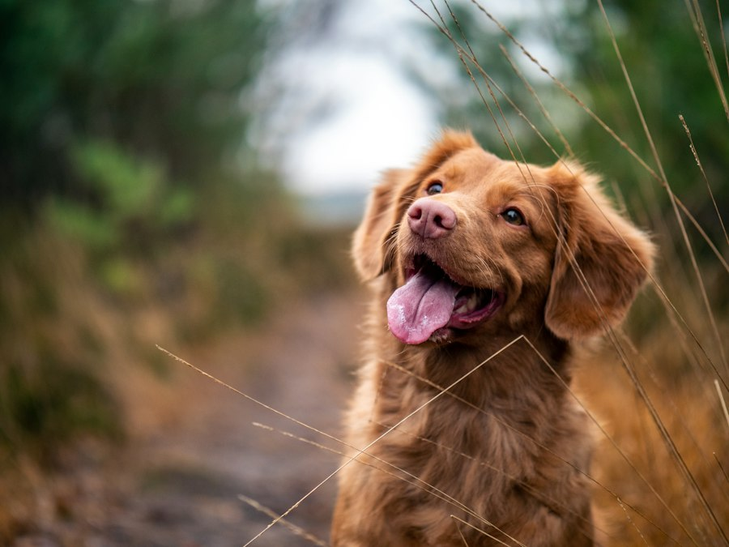
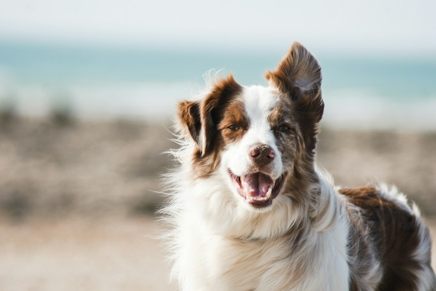
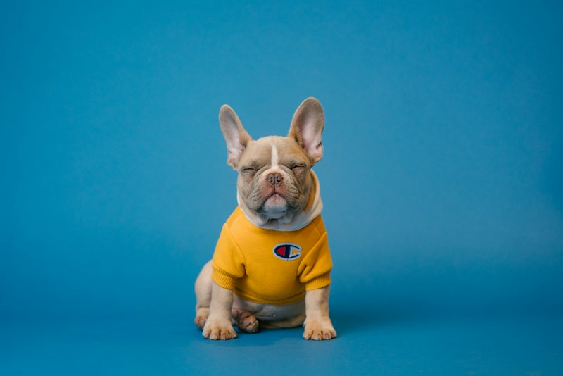
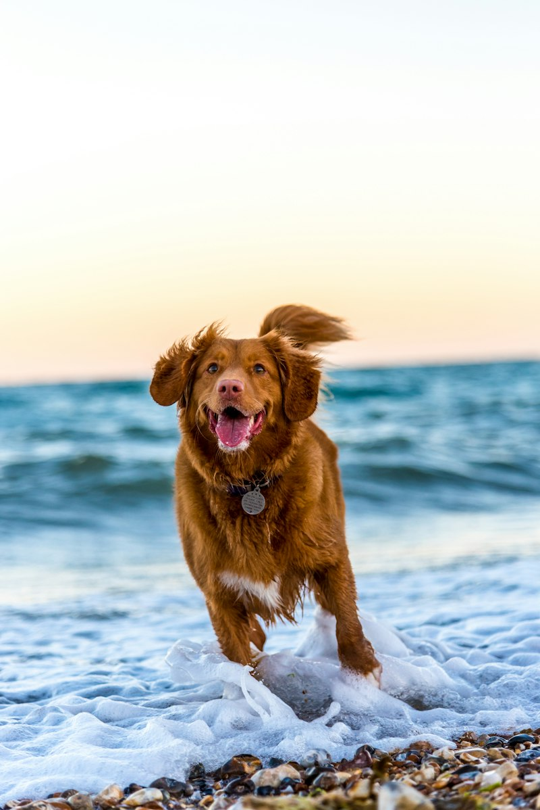
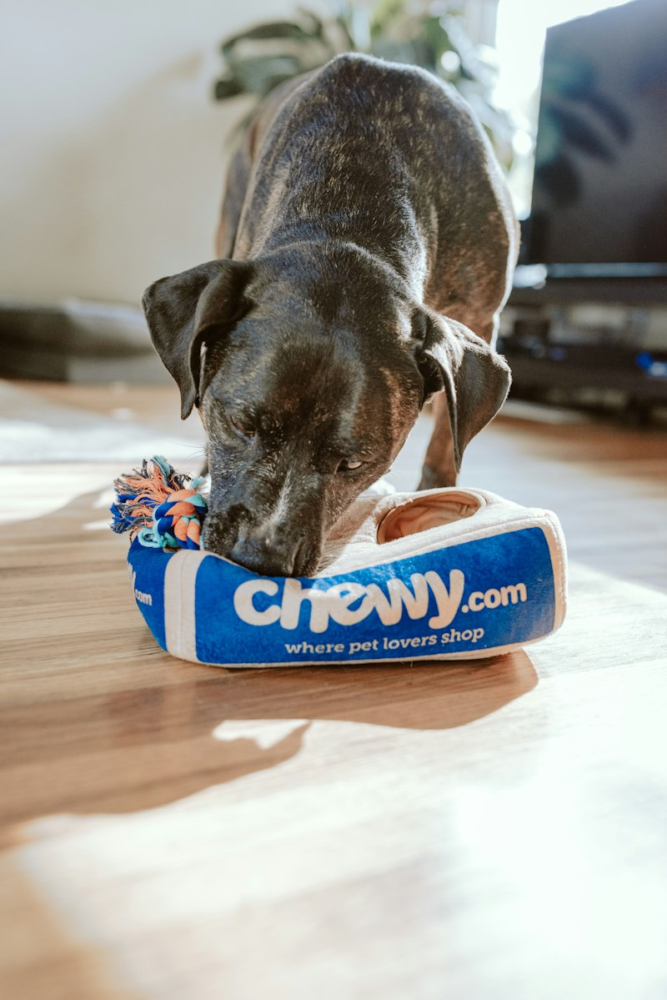
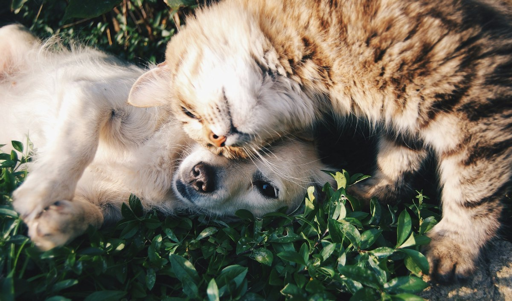

Banho
Higiene completa com carinho — seu pet volta limpo, cheiroso e mais tranquilo.
Banho, tosa e consultório veterinário no Campeche — cuidado próximo, com o Dr. Rafael e uma equipe atenta ao seu pet.
Serviços
Estética animal e atendimento veterinário no mesmo endereço da Av. Pequeno Príncipe.

Higiene completa com carinho — seu pet volta limpo, cheiroso e mais tranquilo.

Tosa higiênica e estética com atenção ao porte e ao temperamento de cada animal.

Atendimento com o Dr. Rafael — vacinas, consultas e cuidado clínico de confiança.
Ambiente



Google Maps
Avaliações reais do perfil no Maps — nota 4,6 com 47 opiniões.
★★★★★“Meu cachorro ficou super limpinho, amamos a experiência!”
Avaliação Google · ago/2025
★★★★★“Clínica veterinária com o melhor atendimento da região. Rafael é super simpático e um maravilhoso profissional.”
Avaliação Google · mar/2023
★★★★★“Veterinário Rafael muito eficiente e educado. Realmente gosta dos bichos!”
Avaliação Google · fev/2021

Chame no WhatsApp e fale direto com a equipe do Bicho Querido no Campeche.
Abrir WhatsApp